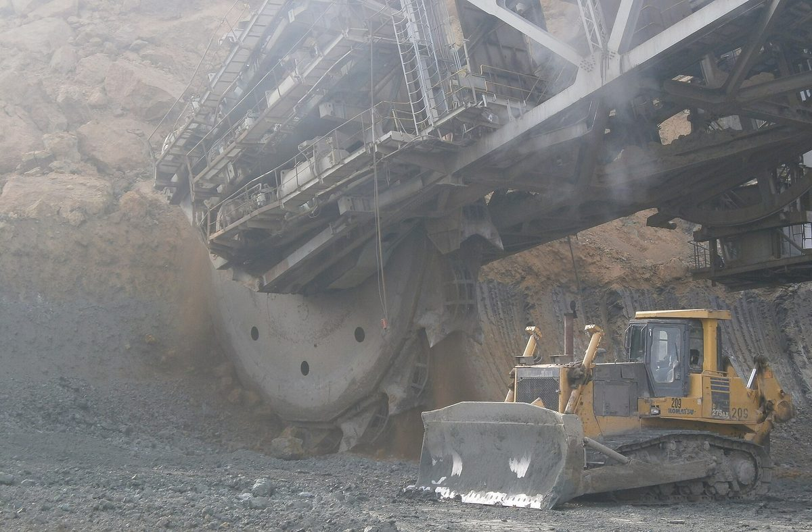

그리스 코자니 아크리니 주민 에너지공동체, 태양광 35MW분 이익 세금 없이 기부받는 길 열려…정부 법안 조항 의견 수렴

국가경제재정부 법안 26조…재생에너지 관리 회사 기부금에 증여세·소득세 면제, 마을에 부동산 가진 사람은 다른 공동체 조합원이어도 가입, 아직 확정 안 돼
그리스 서마케도니아 코자니주 아크리니(Akrini) 마을의 주민 에너지공동체가 한 재생에너지 관리 회사로부터 태양광 발전 이익의 일부를 세금 없이 기부받을 수 있게 하는 조항이 정부 법안에 담겨 공개 의견 수렴에 들어갔다. 국가경제재정부의 개발 프로그램 강화 법안 26조는 '재생에너지 관리 1인 주식회사'가 '아크리니 주민 유한책임 에너지공동체'에 주는 현금 기부액을, 이 회사 태양광 발전소의 전기 판매 이익 가운데 35MW 용량분에 해당하는 금액(이자·세금·감가상각 전 순이익 기준)으로 정했다. 기부한 회사는 이 돈을 사업소득 계산에서 비용으로 뺄 수 있고, 공동체가 받는 기부금은 증여세와 소득세가 면제되며 조합원에게 나눠 주거나 자본에 넣을 때도 사업소득 과세 규정을 적용하지 않는다. 같은 조항은 아크리니 경계 안에 부동산을 가진 개인·법인이라면 같은 지방의 다른 에너지공동체 조합원이더라도 이 공동체에 가입할 수 있도록 에너지공동체법(법 4513/2018)의 제한에 예외를 둔다. 요르고스 아마나티디스(Giorgos Amanatidis) 서마케도니아 도지사는 아크리니 대표들과의 만남, 주민과의 정기 공개 총회, 담당 부처와의 협의를 거쳐 낸 제안이 받아들여졌다고 밝혔다. 다만 이 규정은 아직 의견 수렴 단계여서 확정된 조항은 아니다.
시민에너지 관점
독일 브란덴부르크주는 2019년 주법으로 풍력 사업자가 발전기 주변 지자체에 해마다 정해진 돈을 내도록 해, 발전소 이익을 지역과 나누는 일을 사업자의 선의가 아니라 법의 의무로 만들었다. 발전 이익을 마을에 주는 것이 특혜나 편법 기부로 비칠 수 있다는 우려가 있지만, 아크리니 조항처럼 기부의 기준(35MW분 이익)과 세금 처리를 법에 밝혀 두면 오히려 누구나 따져 볼 수 있는 투명한 제도가 된다. 무엇보다 이익을 받는 쪽이 개인이 아니라 주민이 함께 꾸린 에너지공동체여야 그 돈이 마을 전체의 에너지 전환과 살림에 쓰이고, 주민이 다음 사업의 주인으로 나설 힘이 생긴다. 국내에서도 공공 부지와 공공 발전소에서 나오는 이익을 마을 협동조합·주민 법인이 받는 구조를 법 조항으로 분명히 해야 한다.
출처: Χρόνος Κοζάνης (Xronos Kozanis) 2026-11-03 표기 없음 원문 보기
출처: Energypress 2026-11-03 표기 없음 원문 보기
ギリシャ・コザニのアクリニ住民エネルギー共同体、太陽光35MW分の利益を非課税で寄付として受け取る道…政府法案の条項が意見公募に
国家経済財務省の法案第26条…再エネ管理会社からの寄付は贈与税・所得税を免除、村に不動産を持つ人は他の共同体の組合員でも加入可能に、まだ確定していない
ギリシャ西マケドニア・コザニ県アクリニ（Akrini）村の住民エネルギー共同体が、ある再生可能エネルギー管理会社から太陽光発電の利益の一部を非課税で寄付として受け取れるようにする条項が政府法案に盛り込まれ、意見公募にかけられた。国家経済財務省の開発プログラム強化法案第26条は、「再生可能エネルギー管理一人株式会社」が「アクリニ住民有限責任エネルギー共同体」に行う現金寄付の額を、同社の太陽光発電所の売電利益のうち出力35MW分に相当する金額（利払い・税・償却前の純利益ベース）と定めた。寄付した会社はこの額を事業所得の計算で経費として差し引くことができ、共同体が受け取る寄付金は贈与税と所得税が免除され、組合員に分配したり資本に組み入れたりする場合も事業所得の課税規定は適用されない。同じ条項は、アクリニの区域内に不動産を持つ個人・法人であれば、同じ地方の別のエネルギー共同体の組合員であってもこの共同体に加入できるよう、エネルギー共同体法（法律4513/2018）の制限に例外を設ける。西マケドニアのヨルゴス・アマナティディス（Giorgos Amanatidis）知事は、アクリニの代表との面会や住民との定期的な公開総会、担当省庁との協議を経て出した提案が受け入れられたと明らかにした。ただし、この規定はまだ意見公募の段階で、確定した条項ではない。
市民エネルギーの視点
ドイツのブランデンブルク州は2019年の州法で、風力事業者が風車周辺の自治体に毎年決まった額を支払うよう定め、発電所の利益を地域と分けることを事業者の善意ではなく法の義務にした。発電の利益を村に渡すことが特別扱いや便法の寄付に見えるという懸念もあるが、アクリニの条項のように寄付の基準（35MW分の利益）と税の扱いを法律に明記しておけば、むしろ誰もが確かめられる透明な制度になる。何より、利益を受け取る側が個人ではなく住民が共につくったエネルギー共同体であってこそ、そのお金が村全体のエネルギー転換と暮らしに使われ、住民が次の事業の持ち主として乗り出す力が生まれる。韓国でも、公共用地や公共発電所から生まれる利益を村の協同組合・住民法人が受け取る仕組みを法の条項で明確にすべきだ。
出典: Χρόνος Κοζάνης（クロノス・コザニス） 2026-11-03 記者名なし 原文を読む
出典: Energypress 2026-11-03 記者名なし 原文を読む
希腊科扎尼阿克里尼居民能源社区有望免税获赠35MW份额光伏收益…政府法案条款公开征求意见
国家经济财政部法案第26条…可再生能源管理公司的捐款免征赠与税和所得税，在村内拥有不动产者即使是其他社区成员也可加入，尚未定案
希腊西马其顿科扎尼州阿克里尼（Akrini）村的居民能源社区可免税接受一家可再生能源管理公司捐出部分光伏发电收益的条款，已被写入政府法案并进入公开征求意见阶段。国家经济财政部开发项目强化法案第26条规定，“可再生能源管理一人股份公司”向“阿克里尼居民有限责任能源社区”提供的现金捐款金额，为该公司光伏电站售电利润中相当于35MW装机份额的部分（按息税折旧摊销前净利润计）。捐款公司可在计算营业所得时将这笔钱作为费用扣除，社区收到的捐款免征赠与税和所得税，向社员分配或转入资本时也不适用营业所得课税规定。该条款还为能源社区法（第4513/2018号法律）的限制设立例外：凡在阿克里尼辖区内拥有不动产的个人和法人，即使已是同一大区其他能源社区的成员，也可加入这一社区。西马其顿大区区长约尔戈斯·阿马纳蒂迪斯（Giorgos Amanatidis）表示，经过与阿克里尼代表会面、与居民定期召开公开大会以及与主管部门协商后提出的建议已被采纳。不过，这些规定仍处于征求意见阶段，尚未成为确定条款。
市民能源视角
德国勃兰登堡州2019年通过州法，要求风电企业每年向风机周边的市镇支付一定金额，把与地方分享电站收益从企业的善意变成了法定义务。有人担心把发电收益交给村庄会被看作特殊照顾或变相捐赠，但像阿克里尼条款这样把捐款标准（35MW份额的利润）和税务处理写进法律，反而会成为人人都能查证的透明制度。更重要的是，接受收益的一方必须是居民共同组建的能源社区而不是个人，这笔钱才能用于全村的能源转型和生活，居民也才有力量成为下一个项目的主人。韩国也应以法律条款明确规定，由村庄合作社和居民法人接受来自公共用地和公共电站的收益。
来源: Χρόνος Κοζάνης（科扎尼时报） 2026-11-03 未署名 查看原文
来源: Energypress 2026-11-03 未署名 查看原文
Greek village energy community in Akrini, Kozani, set to receive tax-free share of profits from 35MW of solar under draft law now open for consultation
Article 26 of a Ministry of National Economy and Finance bill exempts the renewable energy management company's donation from gift and income tax and lets local property owners join even if they belong to another community; not yet final
A provision allowing the residents' energy community of Akrini, a village in Kozani in Greece's Western Macedonia region, to receive part of a renewable energy management company's solar profits as a tax-free donation has been included in a government bill and put out for public consultation. Article 26 of the Ministry of National Economy and Finance's bill on strengthening development programmes sets the cash donation from the "Single-Member Renewable Energy Sources Management S.A." to the "Akrini Residents' Limited Liability Energy Community" at the amount of the company's electricity sales profits from a solar plant corresponding to 35MW of capacity, measured as net earnings before interest, taxes, depreciation and amortisation. The donating company may deduct the sum as an expense when calculating business profits, the community's donation is exempt from gift and income tax, and business-income tax rules will not apply if the money is distributed to members or added to capital. The same article makes an exception to a restriction in the energy communities law (Law 4513/2018) so that individuals and companies owning property within Akrini's boundaries can join the community even if they already belong to another energy community in the same region. Western Macedonia regional governor Giorgos Amanatidis said proposals put forward after meetings with Akrini's representatives, regular open assemblies with residents and talks with the relevant ministry had been accepted. The provisions are still at the consultation stage, however, and are not yet final.
Citizen Energy View
In 2019 the German state of Brandenburg passed a law requiring wind operators to pay a set annual sum to the municipalities around their turbines, turning the sharing of power plant profits with local areas from an act of goodwill into a legal duty. There may be concerns that handing generation profits to a village looks like special treatment or a backdoor donation, but writing the basis of the donation (profits from 35MW) and its tax treatment into law, as the Akrini article does, creates a transparent system anyone can check. Above all, the recipient must be an energy community formed jointly by residents rather than individuals, so that the money serves the whole village's energy transition and livelihoods and gives residents the strength to become owners of the next project. Korea, too, should spell out in law a structure in which village cooperatives and resident-owned entities receive the profits from public land and public power plants.
Source: Χρόνος Κοζάνης (Xronos Kozanis) 2026-11-03 No byline Read the original
Source: Energypress 2026-11-03 No byline Read the original